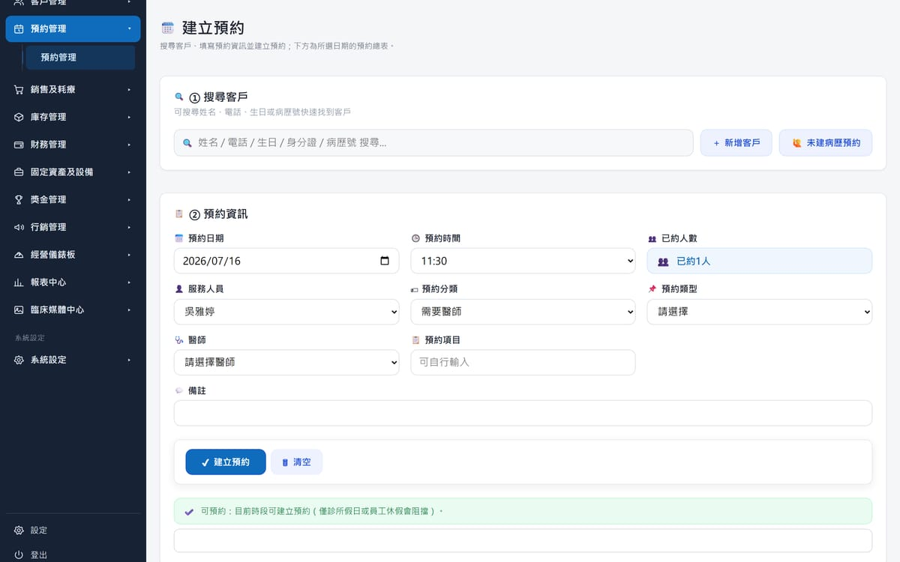
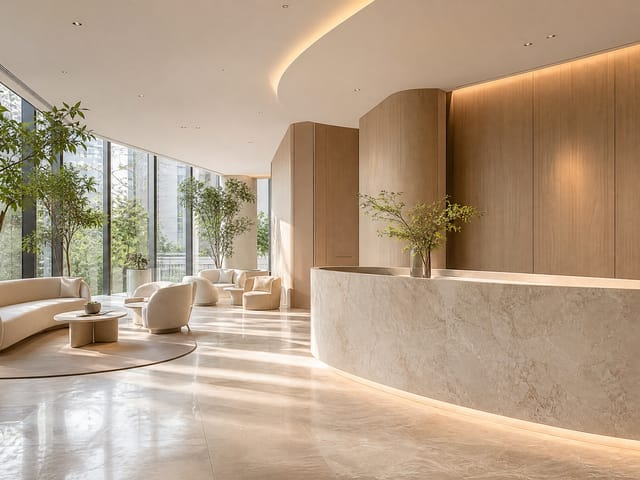
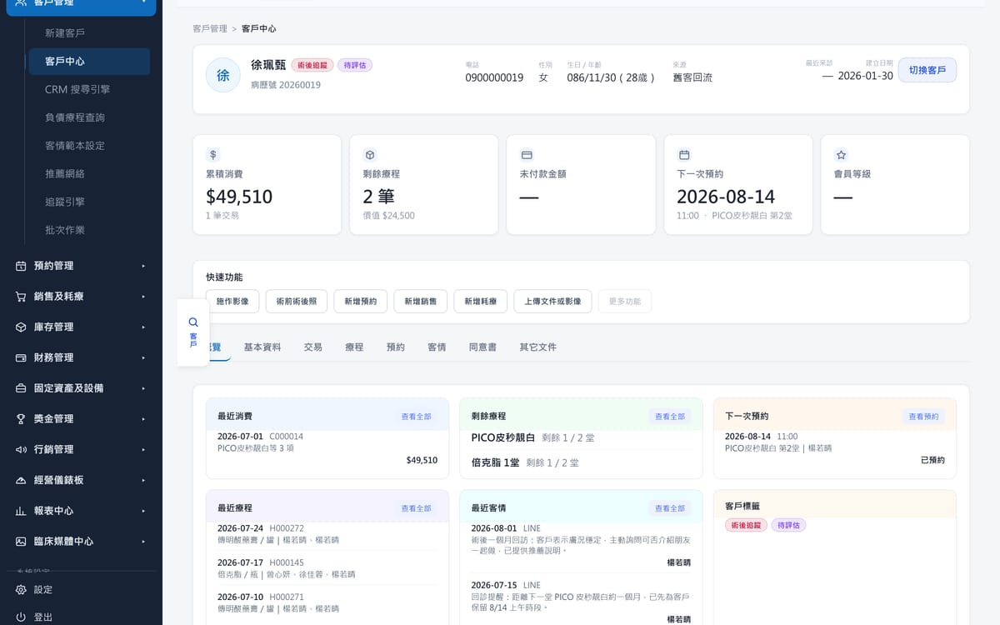
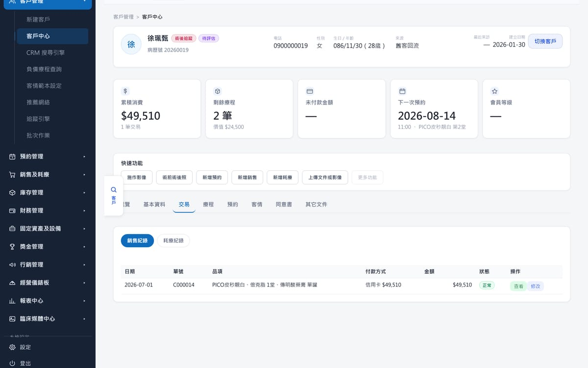
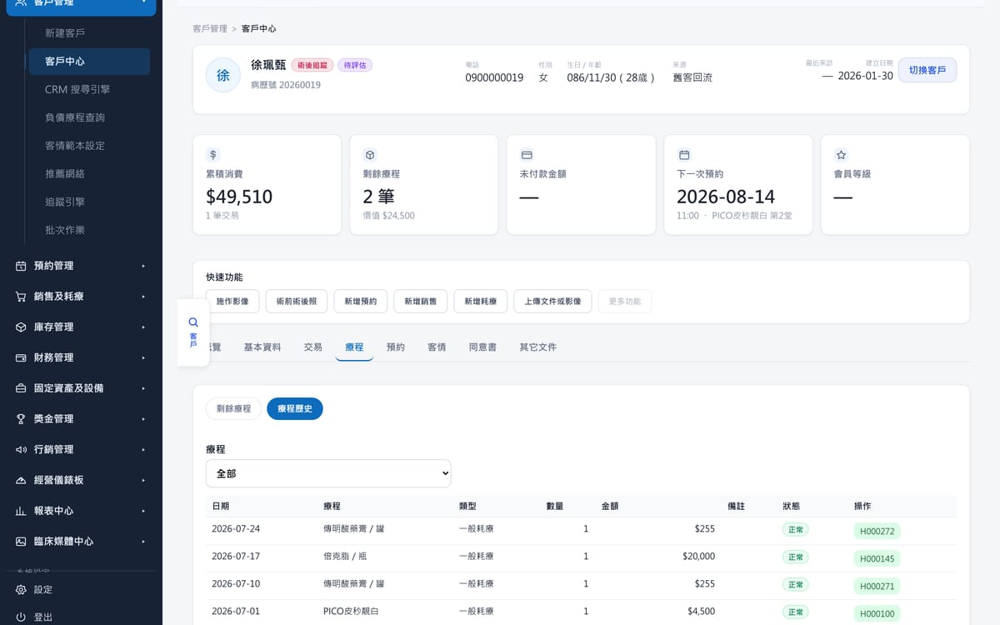
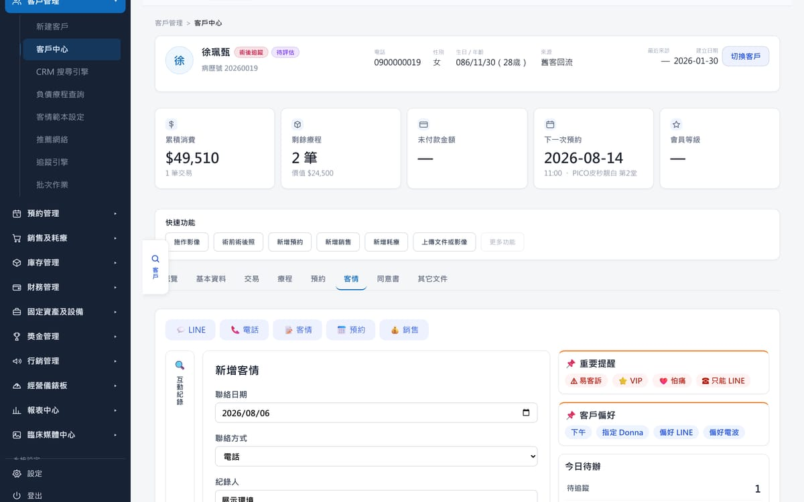
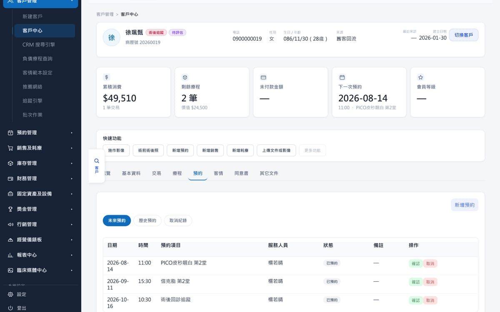
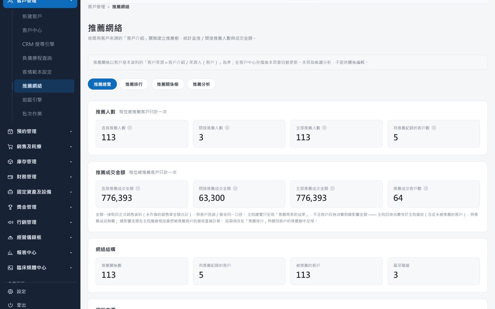

初次相遇
第一次預約
每一段關係，
都從一次預約開始。

Chapter 04
信任，
來自每一天都沒有遺漏。
從第一次踏進診所，到多年後再次預約。ClinicOS 陪伴的，不只是一次療程，而是一段長久的關係。

第一次預約
每一段關係，
都從一次預約開始。


建立 Customer 360
不只是基本資料，
而是她的需求、偏好與歷史。
療程規劃與紀錄
依照需求與目標規劃療程，
買了什麼、怎麼付的，都清楚。


療程歷程
做了幾次、間隔多久、誰做的。
改變說得出來，是因為有依據。

追蹤與提醒
術後追蹤、回診提醒、她的偏好與禁忌，
都記在下一個接手的人看得到的地方。

再次預約
再次回來不是重新開始，
而是接著上一次繼續。

推薦親友，長期陪伴
滿意的體驗會變成口碑；
而口碑，是可以被看見與衡量的。
而是每一次用心，累積成的信任與改變。
本頁七張產品畫面擷取自 ClinicOS 展示環境。畫面中的姓名、電話、療程與金額皆為示範資料， 不對應任何真實顧客或診所，亦不代表任何療程效果。
ClinicOS 陪伴診所，
讓每一位客戶的生命週期，都成為信任的累積。